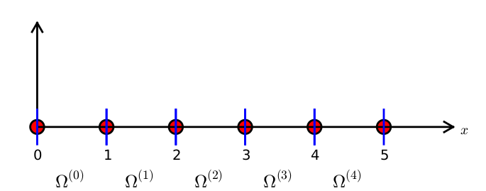

Function approximation by finite elements
The space of continuous functions piecewise linear polynomials
We like the approximate a function \(f\) over a domain \(\Omega\) by a piecewise linear polynomial \(p\). Consequently, we must define an appropriate space such that we can choose a finite base of functions that approximate \(f\) well and that depend of number of element in the domain and this depends on number of points in each element.
Let the interval \(I=[0,L]\) and let \(n+1\) points \(\{x_i\}_{j=0}^n\) define a partion
\[\Omega=\{0=x_0,x_1,\ldots,x_N=L\}\] of \(\Omega\) into \(n\) subintervals \(\Omega^{i}=[x_{i},x_{i+1}]\) for \(i=0,\ldots,N\), we define the points \(x_i\) as the nodes of the mesh. Thus \(\Omega\) have \(N=N_e\) elements and \(N+1=N_n\) nodes. thus
nodes=[x_0,x_1,,x_N] elements=[[0,1],[1,2],…[N-1,N]]
We can create other Note that the nodes can be chosen arbitrarily and it is not necessary that they are equidistant but we use the uniform mesh for simplicity in our explanation.

We can define a space \(V_h\) of continous piecewise linear function by \[V_h=\{v:v\in C^0(\Omega):v|_{\Omega_i}\in P_n(\Omega_i)\}\] where \(P_1(I_i)\) is the space of polynomials of degree at most n on \(I_i\). We introduce